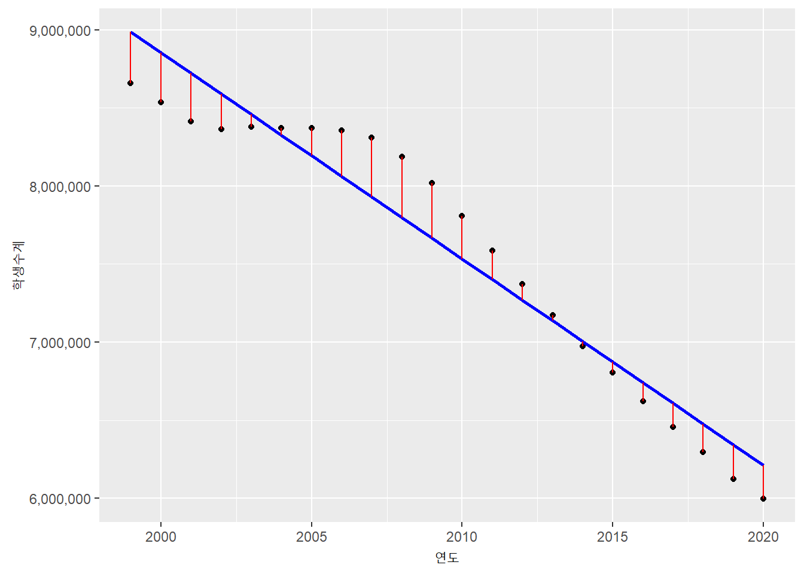
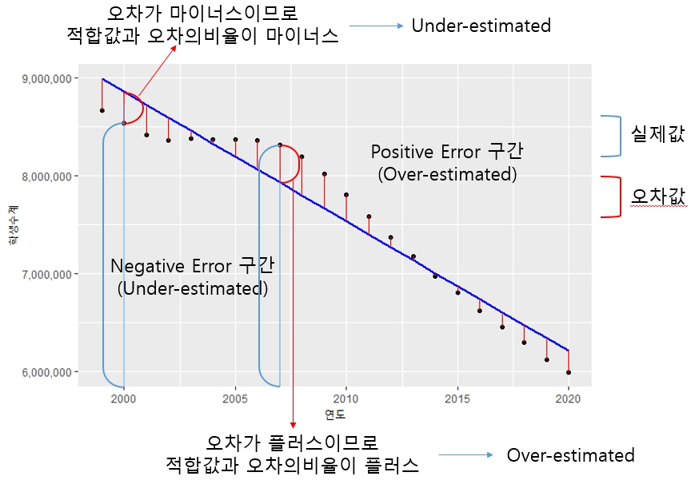
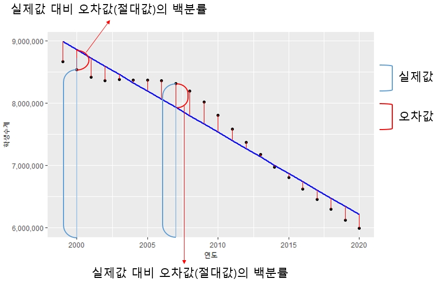

7.1 성능분석 지수
시계열 분석 모델간의 성능을 분석하기 위해서는 예측 정확도 평가 판단용 지수들을 사용하여야 한다. 대부분의 예측 정확도 평가 지수는 시계열 모델을 통해 생성된 모델의 적합값과 실제값의 차이인 오차항을 평가하여 산출된다. forecast 패키지에서 제공하는 accuracy() 함수를 사용하면 간단히 여러 성능지수를 간단히 구할 수 있다.
7.1.1 MAE(Means Absolute Error)
MAE는 가장 계산이 편리한 성능평가 지수이다. 실제값에서 적합값을 뺀 오차는 양의 오차일 수 도 있고 음의 오차일 수 도있다. 이를 단순히 더하면 오차의 합계가 0에 가까울수 있지만 이것이 모델의 성능이 좋은건지 오차들이 상쇄된 것인지 알수가 없다. 이런 경우를 방지하기 위해 각각 오차의 절대값 평균으로 모델의 성능을 평가하기도 한다.
아래의 그림은 앞서 적합값과 잔차를 설명할 때 참조했던 그림이다. 아래의 그림에서 빨간색 선의 거리에 대한 평균값이 MAE값이 된다.

오차들의 평균값이기 때문에 MAE값이 작을수록 좋은 모델로 평가된다.
7.1.2 RMSE(Root Means Squaread Error)
RMSE는 성능평가에 대표적으로 쓰이는 지수이다. 오차항(Error)을 제곱(Squared)한 값들의 평균(Mean)을 제곱근(Root)한 값이다. RMSE를 시각적으로 표현하면 아래의 그림과 같이 표현된다. 앞선 MAE는 단순히 길이의 평균이지만 RMSE는 길이를 제곱한 것이기 때문에 아래의 그림과 같이 한변이 오차의 길이인 정사각형의 넓이가 된다. 결국 RMSE는 이 넓이들의 평균값에 다시 루트를 씌워 넓이를 다시 길이값으로 변환한 값이다.

오차항을 제곱하기 때문에 큰 오차는 더욱 크게 계산되는 패널티가 존재한다. 산출 방법은 RMSE의 뒤에서부터 차근히 계산해 나가면 구할 수 있다. 오차항을 대상으로 산출한 지수이기 때문에 이 수치가 작을수록 더
7.1.3 MPE
MPE는 오차항(Error)의 백분률(Precentage)의 평균(Mean)을 의미한다. 오차항의 백분률은 실제값에서 적합값을 뺀 오차항을 실제값으로 나눈 값이다. 실제값이 101이고 적합값이 100이라면 101-100 = 1이 오차항이고 이 오차항 1을 실제값 101로 나눈 값(1/101)이 오차항의 백분률이다. 이들 값의 평균이 MPE값이다.
백분률의 평균값이기 때문에 1보다 작은 값이며 제곱이나 절대값이 취해지지 않았기 때문에 값의 크기로 우수 모델을 나눌 수 없다. 다만 이 지수는 모델에 비해 실제값이 위쪽방향(overestimate)에 위치하는지, 아래쪽 방향(underestimate)에 위치하는지에 대한 판단에 주로 사용된다.2

7.1.4 MAPE
MAPE는 오차항(Error)의 백분률(Precentage)의 절대값의 평균(Mean)을 의미한다. 앞의 MPE값과 유사하게 산출되는 값이지만 이 값은 MAE값을 백분률로 산출한 값이다. 예를 들자면 두개의 오차항이 모두 1이라하더라도 실제값이 10일때 오차항 1과 실제값이 100일때 오차항 1은 다르기 때문이다. MAE를 구할때는 실제값에 관련없이 1이라는 값은 동일하게 계산되지만 MAPE에서는 동일한 1값이라도 실제값에 따라 다르게 계산된다.
이 값이 RMSE와 MAE와 가장 다른 점은 백분율을 사용하기 때문에 결과값들이 Y축 의 실제값과 큰 관계가 없다는 것이다. 실제값과 적합값이 같으면(정확하게 예측하면) 분자로 작용하는 오차가 0이 되기 때문에 MPE값은 0이다. 결국 0과 가까운 값일 수록 예측 성능이 우수하다고 평가할 수 있다.
다만 MPE나 MAPE 모두 치명적인 약점을 지니는데 실제값이 0인 경우 산출이 어렵다는 점(분모가 0)과 실제값이 매우 작은 경우(분모가 매우 작은 값)에는 MAPE값이 매우 커질 수 있다는 점이다.
